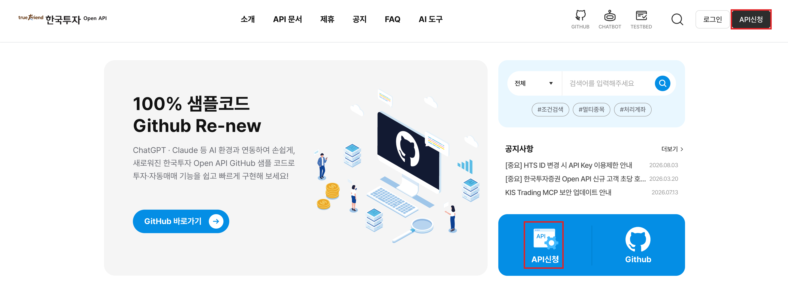
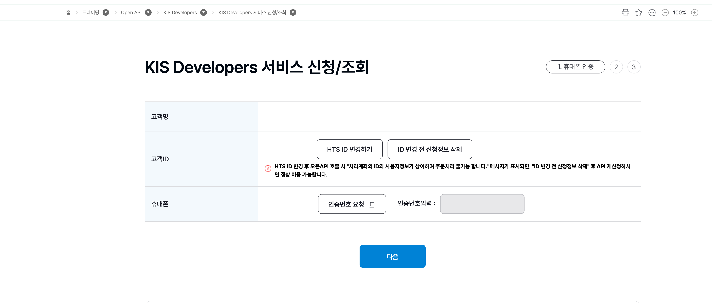
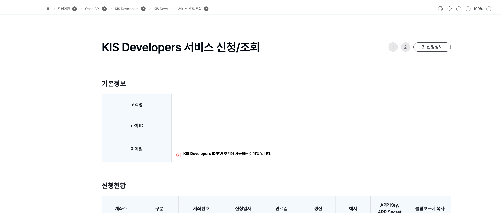
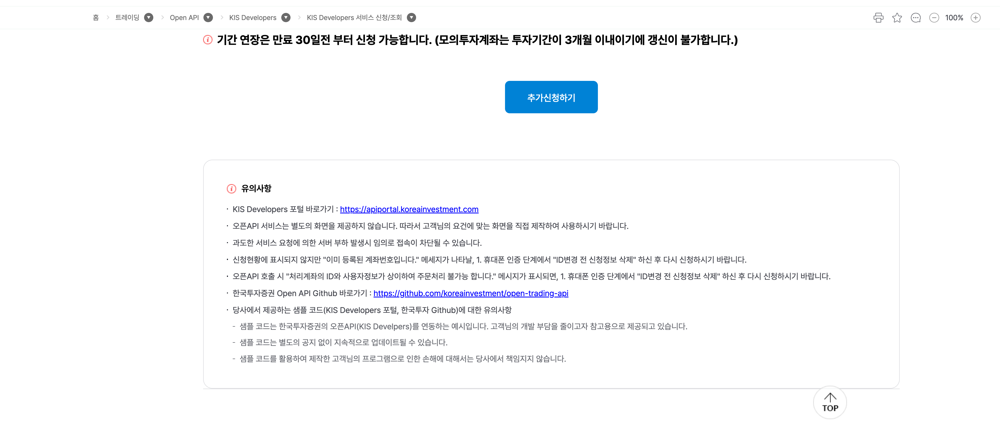
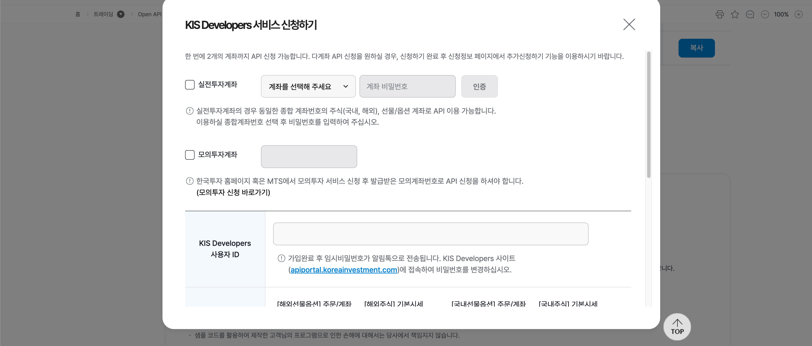
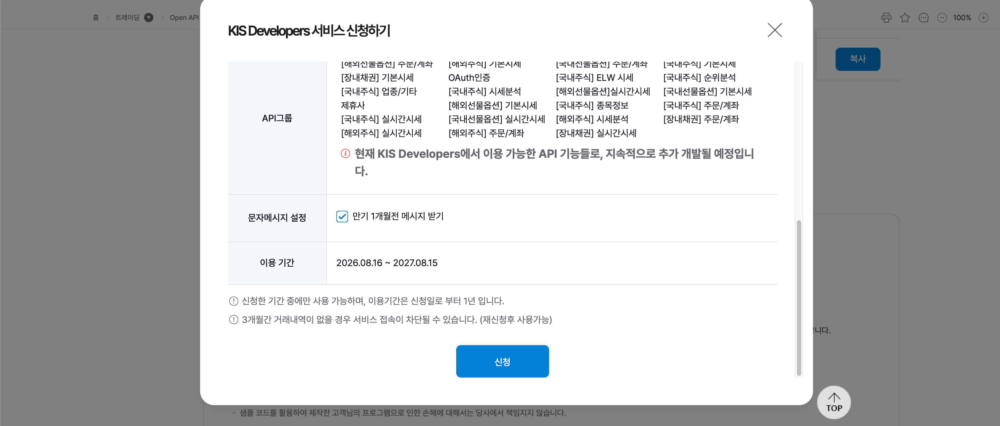
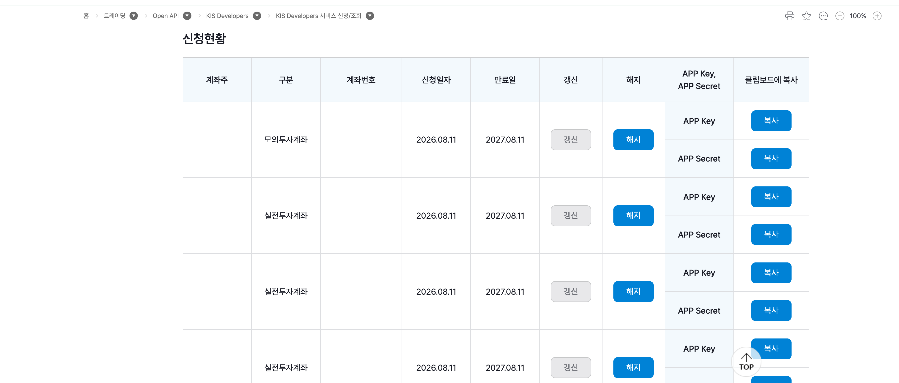

3 앱키 발급받기
한국투자증권 홈페이지에서 Open API 앱키(APP Key)·앱시크릿(APP Secret)을 발급받는 과정을 화면과 함께 따라합니다. 발급받은 두 값은 자격증명과 프로필에서 저장합니다.
처음이라면 모의투자용부터 발급받아 연습하는 것을 권장합니다. (실전용과 모의투자용 앱키는 따로 발급됩니다.)
3.1 준비
- 한국투자증권 실계좌가 있어야 합니다(없으면 먼저 개설). 그리고 HTS/MTS 등에서 API 서비스 신청(사용 동의)을 해야 합니다.
- 신청 화면으로 가는 방법은 두 가지입니다:
- KIS 개발자센터 https://apiportal.koreainvestment.com/intro 에서 오른쪽 맨 위의 검정색 API 신청 버튼(또는 본문의 파란색 API 신청 버튼)을 누릅니다.
- 또는 홈페이지 로그인 후 트레이딩 > Open API > KIS Developers > KIS Developers 서비스 신청/조회 로 이동합니다.

3.2 휴대폰 인증
본인 휴대폰으로 인증번호를 받아 인증합니다.

3.3 신청정보 확인
기본정보(고객명·고객 ID·이메일)를 확인합니다.

같은 페이지 아래쪽의 추가신청하기(최초라면 신청하기) 버튼으로 계좌에 API 이용을 신청합니다 (유의사항도 함께 안내됩니다).

3.4 API 서비스 신청하기
앱키·앱시크릿을 발급받으려면 계좌에 API 이용을 신청해야 합니다. 위 버튼을 누르면 뜨는 창에서, 실전투자계좌는 종합계좌를 고르고 계좌 비밀번호로 인증하며, 모의투자계좌는 발급받은 모의계좌번호를 입력합니다. KIS Developers 사용자 ID도 함께 정합니다.

사용할 API 그룹을 선택하고 신청을 누릅니다.

3.5 신청현황에서 APP Key · APP Secret 복사
신청이 완료되면 신청현황 목록에 계좌가 나타납니다. 각 계좌 행에서 APP Key와 APP Secret을 각각 복사 버튼으로 복사합니다. 이 두 값이 세션을 여는 자격증명입니다.

APP Key·APP Secret은 남에게 보이거나 공개 저장소(GitHub)에 올라가지 않도록 조심해 주세요.
3.6 다음 — 자격증명 저장
복사한 APP Key·APP Secret(과 계좌번호)을 자격증명과 프로필의 KISConfig(...).save() 로 저장하면, 이후 KISClient(profile=...) 한 줄로 세션이 열립니다.